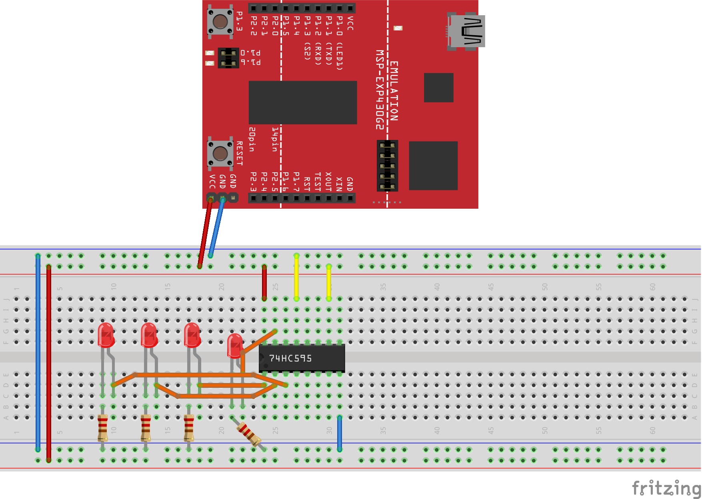
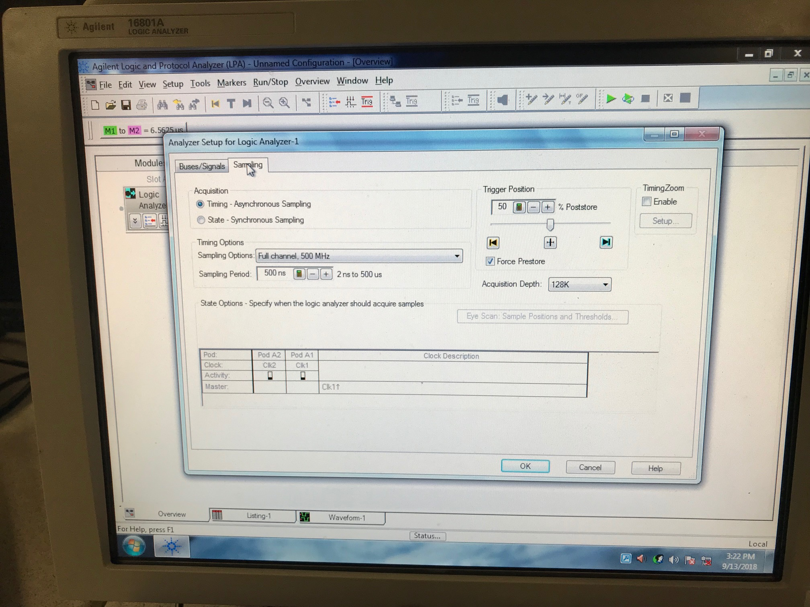
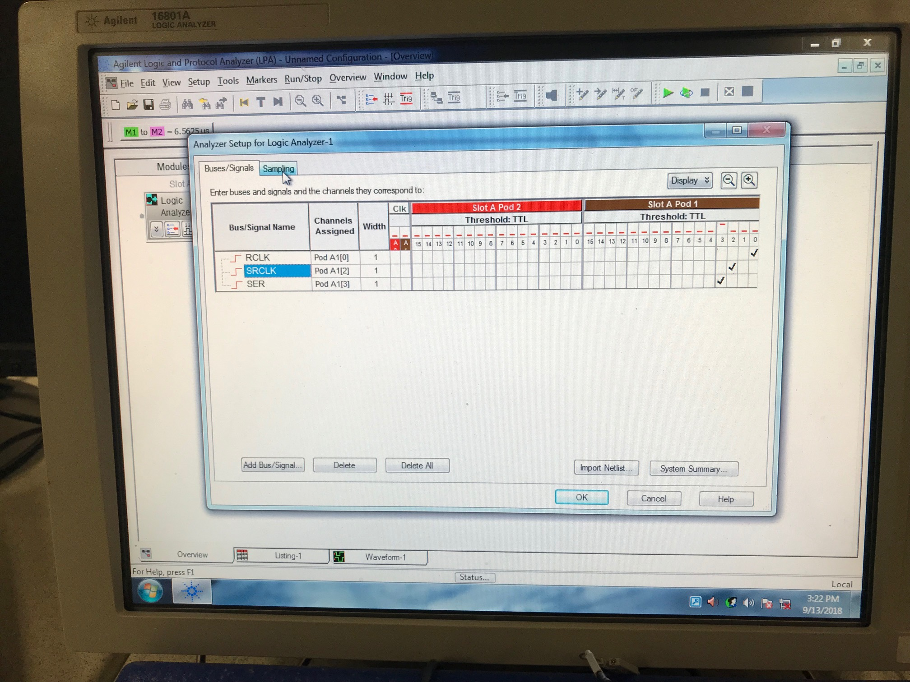
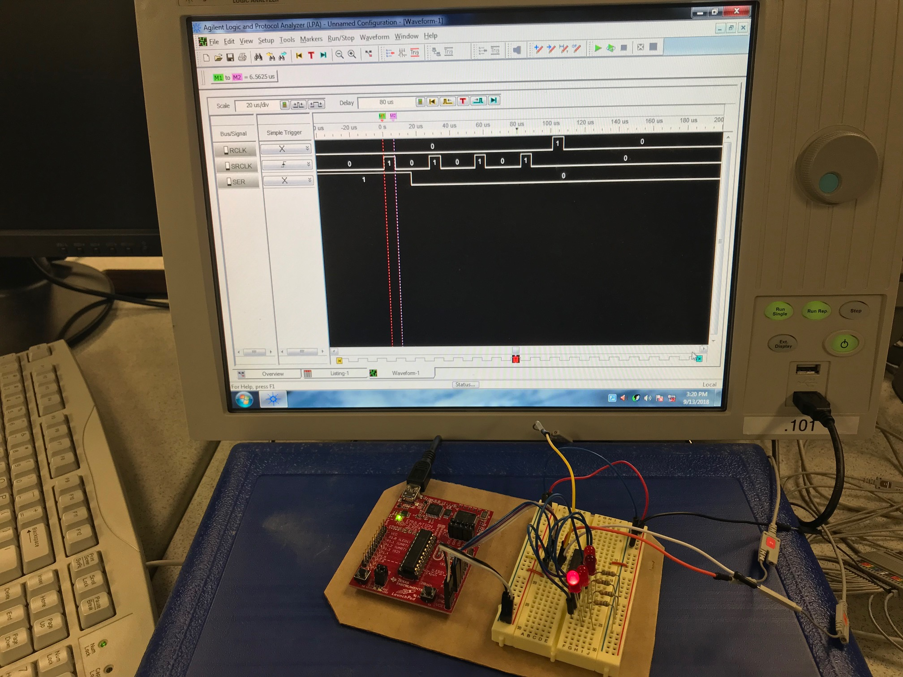
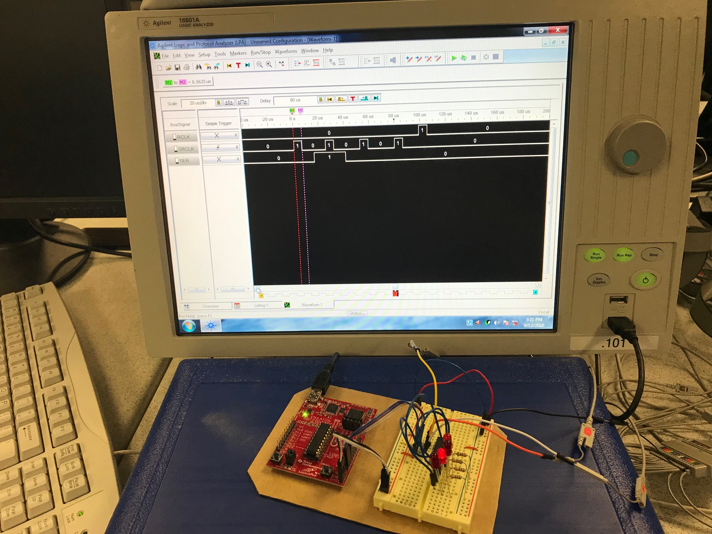
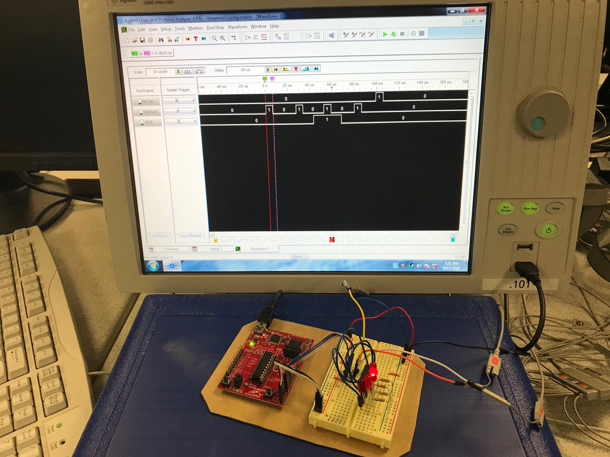
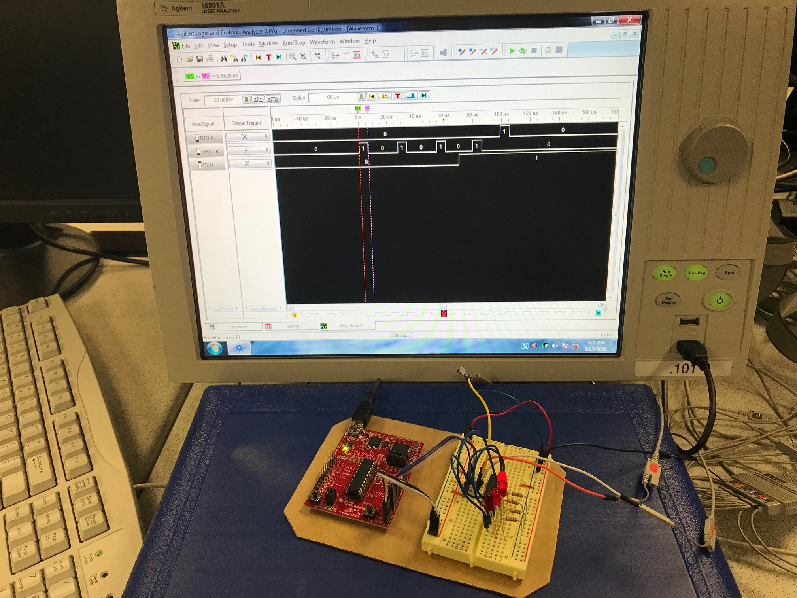
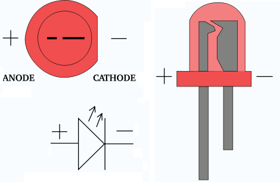
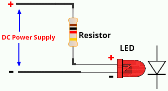

Using the your knowledge and experience from class. First implement a button with a software delay so the uC only registers 1 button press when the button is hit.

Now, wire up your shift register according to the datasheet. A suggested setup is shown above. Note, the command wires going from your Launchpad to the 595 are not shown. You get to pick which pins you want to use and how they get wired up.
To verify your uC is sending the correct commands to the 595, hook it up to the logic analyzer. Make sure you understand how the SRCLK, SER, and RCLK works in order to verify the signal on the logic analyzer.







LEDs are polarized, meaning, if you hook them up backwards, you will destroy them. The key feature on every through hole LED is the flat side which indicates it is the side you attach to ground.

Most LEDS, like the ones we have for our lab, can handle between 2 and 20 mA of current. Too much, and you will destroy the LED. So we need to put a current limiting resistor in there.
Once you have everything hooked up, you need to write assembly code to:
The 595 chip is basically a serial data in, parallel data out converter. Later we will talk about different types of serial communications. Right now you are going to program a software serial device.
There is more than one way to write this software. Basically you need to tie pins on your Launchpad to the SRCLK, SER, and RCLK pins on the 595. Which ever pins you choose on the Launchpad, you will need to set them up properly. You have to come up with a way to “clock in” the serial data to the 595 by toggling those three pins in the right sequence. This really isn’t hard, you just have to think about it (it is a state machine … draw a flowchart!).
Turn in a flow diagram of your code.
On the SN74HC595 8b shift register, answer the following (Note: some of this should be familiar from ECE 281):
SRCLR pin do?SER pin do?RCLK do?SRCLK do?For button debouncing, show your instructor:
For complete operation, show your instructor:
lab 1 init project or lab 1 final working code check by instructor